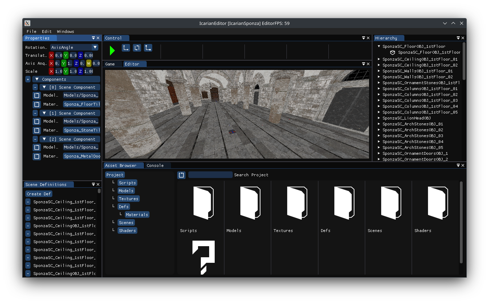

Icarian Engine is a general purpose 3D engine designed to have inbuilt mod support and target multiple platforms. The aim is to make mod support less of a labour for developers by having it at engine level in hopes that modding support comes to more games.
It is currently in development and highly experimental.
Icarian Engine has a editor with integrated tools to ease development. It includes scene views, def editing, and a profiler.
Icarian supports Windows and Linux using Vulkan with more planned to come.
Icarian uses C# for scripting. Running in an embedded mono runtime. The editor handles all the project files so you can just create a C# script and run the game in the editor without having to mess around.
Next